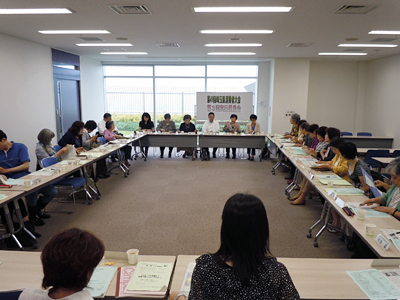

- 【日 時】
- 6月13日（木）13：30～15：30
- 【場 所】
- 浦和コミュニティセンター14集会室
- 【参加者】
- 26人(21団体)＋事務局（4人）

■議 題
- 自己紹介、第1回プレ学習会 （参加者数129名）、第2回プレ学習会について報告しました。本日チラシを配布しました。第1回の学習で、食の安全について関心も高まっているところ、ぜひ多くの方に来ていただきたい講演であり広報していくことを、伝えました。
- 第49回大会基調報告への意見について
前大会から情勢の変わらない部分もあり、今後も注視し、皆さんの意見を取り入れながら基調報告をまとめていきます。
- 全体会について
時間の目安を確認し、実行委員会団体紹介は例年通り代表者が登壇する形で行うこと、オープニングは指揮者に依頼し、合唱の参加は次回提案することを伝えました。記念講演について時間は80分に。意見交換し、性別･年齢にとらわれず「おひとりさま」が安心して生きていくために考えるテーマでお話しいただく方向になりました。大会スローガンは、案を基に継続する思いと強調したいことを出し合い、次回決定することにしました。他、託児、お弁当について事務局が手配を進めることを確認しました。
- 平成25年度市町村における消費生活関連事業調査の進め方
具体的な調査の流れについて説明しました。現在、4団体から調査訪問にエントリーがあり、他の自治体にはアンケートを送付済みです。調査結果活用についても進めていきます。
- 分科会について
各団体の担当が決定し、分科会の大会までの進め方と当日のスケジュールを確認後、担当に分かれて顔合わせ、テーマや助言者について話し合いました。
- 基調報告・県への要請、大会スローガン
ひきつづき意見を、また次回実行委員会の出欠など、FAXで返信頂くことを確認しました。合わせて、第2回プレ学習会の参加を呼びかけました。
|